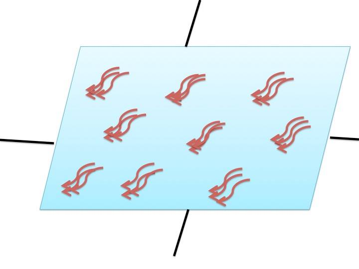

Towards the competition in USA, we will carry out the experiment explained in Project and validate the result of simulation.
Step1
We will use template strands and staple strands to synthesize DNA origami by annealing them in PCR machine. In this step, we will locate the DNA single strands in a way that when gold nanoparticles are attached to them, it will reflect ultraviolet.
We have two plans by which DNA origami are bound to each other to create a sheet.

Step2
①On a mica surface, we drop the DNA origami (made in Step1) and then add the DNA glue strand. In this way, DNA origami binds to each other by forming a double-strand DNA chain, creating a sheet.
②This plans differs from 1 in that the DNA glue strand is not used. The single strand DNA attached to the origami is self-complementary, so it can forms a double strand without the presence of glue strand.
Step3
Adding gold nanoparticles to DNA origami.
Single DNA strands bind to surface of gold nanoparticles by a chemical bond randomly. This single DNA strands and gold nano particle-binding strands on the DNA origami are complementary. Particles are unlikely to dissociate from DNA origami at a normal temperature because the Tm value of these strands are 40℃.
Then we cover another mica sheet on top of it, so the DNA origami sheets will be thinly spread.
Before covering the origami surface with another mica sheet, we also check whether the gold nanoparticles form the same pattern as the simulation result using atomic force microscopy (AFM).
We will evaluate whether DNA origami sheet can reflect UV, or the probability of its reflectance using a spectrophotometer
Summarizing the above, these are what we plan to before the main competition:
1.The way to locate gold nanoparticles in a certain pattern, that can reflect ultraviolet light on DNA sheets. (step1)
2. How to attach single DNA strand for binding DNA origami each other on that.
3. Evaluating whether DNA glue strands work well.
4. Evaluating whether our particle pattern can reflect UV at high probability by using glue strand.
5. How to make flat DNA sheets, which is not a 3D structure.
If we can realize our plan, we can suggest many applications.
This optical filter is a material that reflects UV while being transparent at other wavelengths. It may enable us to create novel transparent UV cut material, which could be used for colorless sunglasses and windows, for instance. Our advantage is the transparency the material can achieve. UV cut material can lose its transparency when achieving high reflectance, however, by using DNA sheets, we can create a more transparent material.
There are other possibilities of applications utilizing this method. If we can make particle patterns that reflect other light, we can use DNA sheets for creating blue light cut films or infrared sheets for insulation.